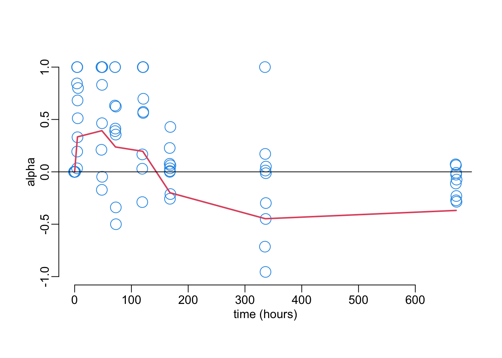

path2data <- paste0(Sys.getenv("HOME"), "/Library/CloudStorage/",
"OneDrive-OxfordUniversityClinicalResearchUnit/",
"GitHub/choisy/malarone/")Some epidemiological effects of malarone
Below, we use the formalism of Smith & McKenzie (2004).
1 Parameters
2 Packages
required_packages <- c("readr", "readxl", "dplyr")to_inst <- required_packages[! required_packages %in% installed.packages()[,"Package"]]
if (length(to_inst)) install.packages(to_inst)library(dplyr)3 Functions
read_tsv2 <- function(file, ...) readr::read_tsv(paste0(path2data, file), ...)4 Individual vectorial capacity
The individual vectorial capacity (i.e. the expected number of infectious bites from a single vector after feeding on an infectious host):
\[ C = c \cdot P_e \cdot S \]
where \(c\) is the transmission efficiency from human to mosquito (i.e. probability of becoming infected after feeding on an infectious human), \(P_e\) is the probability of becoming infectious for an infected mosquito:
\[ P_e = e^{-gn} \] (with \(g\) the mosquito death rate and \(n\) the EIP), and \(S\) is the stability index, i.e. the total number of bites per mosquito during its lifetime:
\[ S = \frac{a}{g} \] with \(a\) the mosquito biting rate, i.e. the number of bites per mosquito. Gathering everything gives:
\[ C = c \cdot e^{-gn}\frac{a}{g} \]
5 Effects of malarone
The results of the experiments suggest that the mosquito death rate \(g\) and biting rate \(a\) are not affected by malarone (Figure 7). However, the results also show that malarone
- decreases by the multiplicative factor \(\alpha\) (\(0 \leq \alpha \leq 1\)) the number of mosquitoes with Plasmodium (Figure 3);
- decreases by the multiplicative factor \(\beta\) (\(0 \leq \beta \leq 1\)) the number of Plasmodium in mosquitoes still harboring Plasmodium (Figure 4);
- slows down the development of these Plasmodium (Figure 5).
The effect on \(C\) of the first phenomenon can simply be modelled as a multiplicative factor \(\alpha\): \[ C' = \alpha\cdot C \]
In order to model the effect on \(C\) of the second phenomenon we need a function \(f\) that relates the Plasmodium load to mosquito-to-human infectiousness for example the “single-hit” model of Aleshnick et al. (2020):
\[ f(S) = 1 - e^{-\lambda S} \] where \(S\) is the Plasmodium load and \(\lambda\) is some parameter (estimated to \(5.8\times 10^{-6}\) in Aleshnick et al. (2020)). From here, the effect on \(C\):
\[ C' = \frac{f(S)}{f(\beta S)}C \] Which here gives:
\[ C' = \frac{1 - e^{-\lambda S}}{1 - e^{-\lambda\beta S}}C \]
In order to model the effect on \(C\) of the third phenomenon we need a function \(g\) of the Plasmodium development in order to convert a reduction in prevalence, numbers and sizes into a reduction in EIP. Figure 5B from Werling et al. (2019) suggests a linear relationship between the development time and oocysts size, which means that the effect on \(C\) of the third phenomenon can simply be modelled as
\[ C' = C e^{(1 - 1/\gamma)gn} \]
Gathering the 3 effects on C:
\[ C' = \alpha e^{(1 - 1/\gamma)gn}\frac{1 - e^{-\lambda S}}{1 - e^{-\lambda\beta S}} C \] Let’s now call \(P\) the prevalence of malaria in the human population and \(D\) the duration of infection in the human host. This means that \(P\) blood meals will be done on infected human.
\[ C' = \left(P\tau\int_0^D\alpha(t) e^{(1 - 1/\gamma(t))gn}\frac{1 - e^{-\lambda S}}{1 - e^{-\lambda\beta(t) S}}dt + 1 - P\tau\right) C \]
The more generic formula:
\[ C' = \left(P\tau\int_0^D\alpha(t) e^{(1 - 1/\gamma(t))gn}\frac{f(S)}{f(\beta(t) S)}dt + 1 - P\tau\right) C \]
\[ y = C x^a e^{-b x} \]
\[ \log(y) = \log(C) + a\log(x) -bx \]
6 Numeric analysis
hours <- c(0, 5, 48, 72)
days <- c(5, 7, 14, 28)
hash <- c(setNames(hours, paste0("H", hours)), setNames(24 * days, paste0("D", days)))fig3b <- "ASAAP4b_sporozoite2.txt" |>
read_tsv2() |>
filter(patient_id %in% c(1:6, 10:12, 18),
time_points != "Control", time_points != "Unfed",
!is.na(cq_1), !is.na(tm_1)) |>
select(patient_id, time_points, cq_1, tm_1) |>
group_by(patient_id, time_points) |>
summarise(prev = mean(75 < tm_1 & tm_1 < 81 & cq_1 < 35)) |>
mutate(alpha = 1 - prev / prev[time_points == "H0"]) |>
ungroup() |>
mutate(time_hours = hash[time_points])mean_alpha <- fig3b |>
group_by(time_hours) |>
summarize(mean_alpha = mean(alpha))with(fig3b, plot(jitter(time_hours), alpha,
col = 4, ylim = c(-1, 1), xlab = "time (hours)", cex = 2))
with(mean_alpha, lines(time_hours, mean_alpha, col = 2, lwd = 2))
abline(h = 0)
7 Basic reproduction ratio
The basic reproduction ratio is the expected number of infected humans per infected human or, equivalently, the expected number of infected mosquitoes per infected mosquito:
\[ R_0 = C \cdot b \cdot \frac{a}{r} \cdot m \]
where \(C\) is the above defined individual vectorial capacity, \(b\) is the transmission efficiency from mosquito to human, \(r\) is the human recovery rate, and \(m\) is the ratio of mosquitoes to humans. Gathering everything gives:
\[ R_0 = \frac{ma^2 bc e^{-gn}}{rg} \]
8 Proportion of infected humans
The proportion of infected humans at equilibrium can be expressed as a function of \(R_0\):
\[ \bar{X} = \frac{R_0 - 1}{R_0 + c S} \]
Gathering everything gives:
\[ \bar{X} = \frac{ma^2bce^{-gn} - rg}{ma^2bce^{-gn} + rac} \]
9 Adding the effects of malarone
Effects of transmission blocking activity (TBA, Figure 3) and the extension of the Extrinsic Incubation Period (EIP, Figure 5) on the individual vectorial capacity:
\[ C = (\mbox{TBA}\cdot c) \cdot e^{-\left(\mbox{EIP}\cdot n\right)g}\frac{a}{g} \] Note that malarone has no effect on \(a\) and \(g\) (Figure 7). Effect of TBA, EIP and transmission reducing activity (TRA, Figure 4) on the basic reproduction ratio:
\[ R_0 = \frac{ma^2 (\mbox{TRA}\cdot b)(\mbox{TBA}\cdot c) e^{-\left(\mbox{EIP}\cdot n\right)g}}{rg} \]
Note that here we don’t consider the potential effects of malarone on the recovery rate \(r\) in humans and that we assume that malarone has no effect on the density \(m\) of mosquitoes.
Effects of TBA, TRA and EIP on the proportion of infected humans:
\[ \bar{X} = \frac{ma^2(\mbox{TRA}\cdot b)(\mbox{TBA}\cdot c)e^{-\left(\mbox{EIP}\cdot n\right)g} - rg}{ma^2(\mbox{TRA}\cdot b)(\mbox{TBA}\cdot c)e^{-\left(\mbox{EIP}\cdot n\right)g} + ra(\mbox{TBA}\cdot c)} \]